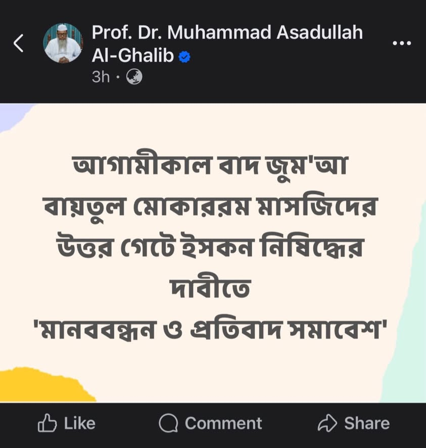

আহলুল হাদীসের অঙ্গনে যদি কোনো বিপ্লবী চেতনা, প্রতিবাদী সাহস ও যুগসচেতন দৃষ্টি…
৩০ অক্টোবর, ২০২৫
আহলুল হাদীসের অঙ্গনে যদি কোনো বিপ্লবী চেতনা, প্রতিবাদী সাহস ও যুগসচেতন দৃষ্টি সম্পন্ন আলেমে দ্বীন থেকে থাকেন, তবে তিনি নিঃসন্দেহে ড. আসাদুল্লাহ আল-গালিব (হাফিজাহুল্লাহ)। তিনি সেই আলেম, যাঁকে মাদখালিজমের নপুংসকতা স্পর্শ করতে পারেনি।
আহলুল হাদীসের অঙ্গনে যদি কোনো বিপ্লবী চেতনা, প্রতিবাদী সাহস ও যুগসচেতন দৃষ্টি সম্পন্ন আলেমে দ্বীন থেকে থাকেন, তবে তিনি নিঃসন্দেহে ড. আসাদুল্লাহ আল-গালিব (হাফিজাহুল্লাহ)। তিনি সেই আলেম, যাঁকে মাদখালিজমের নপুংসকতা স্পর্শ করতে পারেনি।
